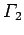

Inhalt Index DeskTop Bronstein

 Geometrie Differentialgeometrie Ebene Kurven Evoluten und Evolventen
Geometrie Differentialgeometrie Ebene Kurven Evoluten und Evolventen


Evolute einer gegebenen Kurve heißt eine zweite Kurve, die aus den Krümmungsmittelpunkten der ersten Kurve besteht; sie ist gleichzeitig Einhüllende der Normalen dieser ersten Kurve. Die Einhüllende wird auch Enveloppe genannt. Die Parameterform der Evolute erhält man aus der Gleichung (3.469) für die Krümmungsmittelpunkte, wenn xC und yC als laufende Koordinaten aufgefaßt werden. Wenn es gelingt, aus diesen Gleichungen den Parameter (x, t oder  ) zu eliminieren, dann kann die Evolutengleichung in kartesischen Koordinaten hingeschrieben werden.
) zu eliminieren, dann kann die Evolutengleichung in kartesischen Koordinaten hingeschrieben werden.
| Beispiel |
|
Es ist die Evolute der Parabel y = x2 zu bestimmen. Aus folgt mit X und Y als laufende Koordinaten der Evolute |
Evolvente oder Involute einer Kurve  heißt eine Kurve die für eine Evolute ist. Daher ist jede Normale PC der Evolvente eine Tangente an die Evolute, und die Bogenlänge der Evolute ist gleich dem Zuwachs des Krümmungsradius der Evolvente (linke Abbildung):
| (3.485) |
Diese Eigenschaften berechtigen für die Evolvente zu der Bezeichnung ,,Abwickelkurve`` der Kurve  da sie aus durch Abwickeln eines gespannten Fadens erhalten werden kann (rechte Abbildung). Einer gegebenen Evolute entspricht eine Schar von Evolventen, die jeweils durch die ursprüngliche Länge des gespannten Fadens bestimmt werden.
da sie aus durch Abwickeln eines gespannten Fadens erhalten werden kann (rechte Abbildung). Einer gegebenen Evolute entspricht eine Schar von Evolventen, die jeweils durch die ursprüngliche Länge des gespannten Fadens bestimmt werden.
Die Gleichung der Evolute ergibt sich durch Integration eines Systems von Differentialgleichungen, das die Gleichung der Evolute darstellt (s. auch Kreisevolvente).
| Beispiel |
|
Die Katenoide ist die Evolute der Traktrix, die Traktrix die Evolvente der Katenoide. |